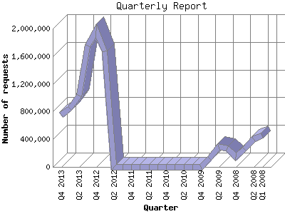

The Quarterly Report shows total activity on your site for each quarter of a
year. Remember that each page hit can result in several server requests as the
images for each page are loaded.
Note: Most likely, the first and
last quarters will not represent a complete quarter's worth of data, resulting
in lower hits.

| Quarter | Number of requests | Number of page requests | |
|---|---|---|---|
| 1. | Q1 2008 | 452,732 | 17,876 |
| 2. | Q2 2008 | 401,314 | 17,206 |
| 3. | Q3 2008 | 262,388 | 14,796 |
| 4. | Q4 2008 | 143,646 | 10,299 |
| 5. | Q1 2009 | 265,552 | 13,884 |
| 6. | Q2 2009 | 285,323 | 15,115 |
| 7. | Q3 2009 | 120,236 | 6,572 |
| 8. | Q4 2009 | 0 | 0 |
| 9. | Q1 2010 | 0 | 0 |
| 10. | Q2 2010 | 0 | 0 |
| 11. | Q3 2010 | 0 | 0 |
| 12. | Q4 2010 | 0 | 0 |
| 13. | Q1 2011 | 0 | 0 |
| 14. | Q2 2011 | 0 | 0 |
| 15. | Q3 2011 | 0 | 0 |
| 16. | Q4 2011 | 0 | 0 |
| 17. | Q1 2012 | 0 | 0 |
| 18. | Q2 2012 | 0 | 0 |
| 19. | Q3 2012 | 1,668,481 | 1,413,825 |
| 20. | Q4 2012 | 1,966,067 | 487,599 |
| 21. | Q1 2013 | 1,757,106 | 528,208 |
| 22. | Q2 2013 | 1,030,347 | 194,215 |
| 23. | Q3 2013 | 849,194 | 206,756 |
| 24. | Q4 2013 | 753,756 | 234,865 |
Most active quarter Q3 2012 : 1,413,825 pages sent. 1,966,067 requests handled.
Quarterly average: 243,170 pages sent. 765,857 requests handled.
This report was generated on November 26, 2013 02:18.
Report time frame January 4, 2008 22:03 to November 25, 2013 23:59.
| Web statistics report produced by: analog 5.1 / Report Magic 2.21 |